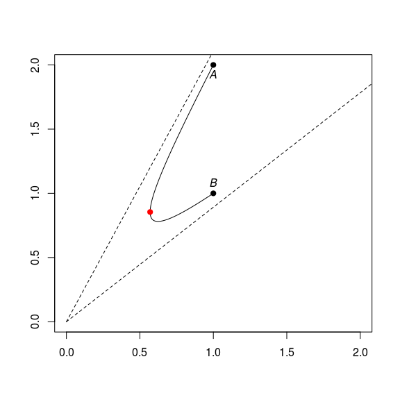
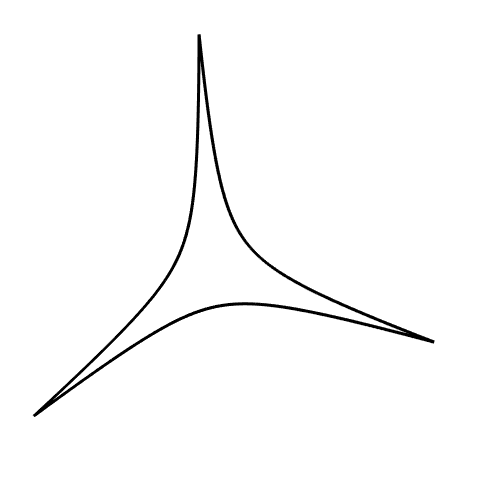
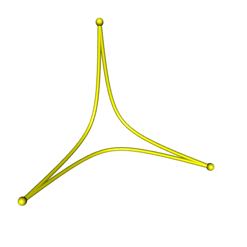
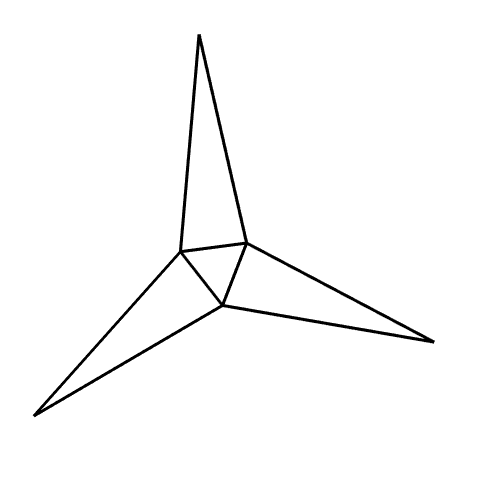
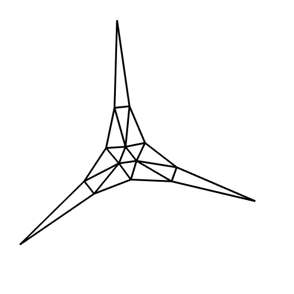
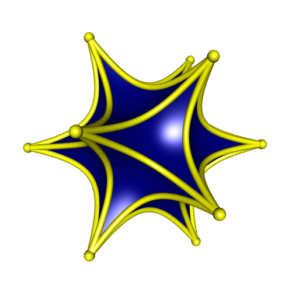
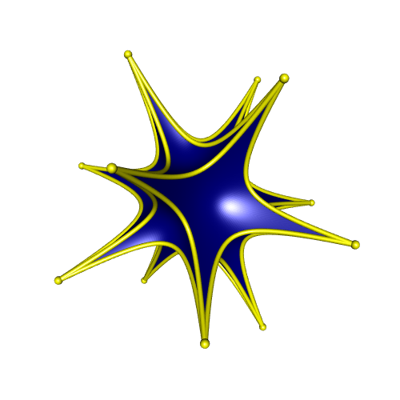
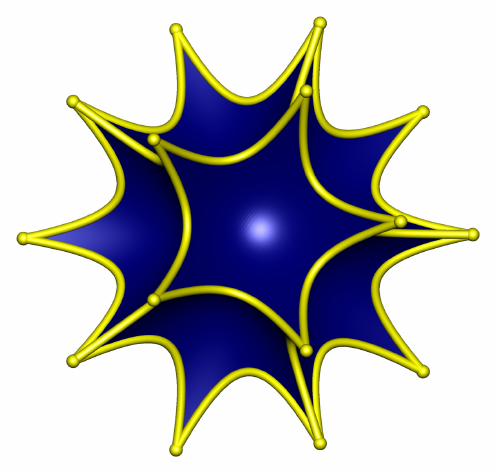
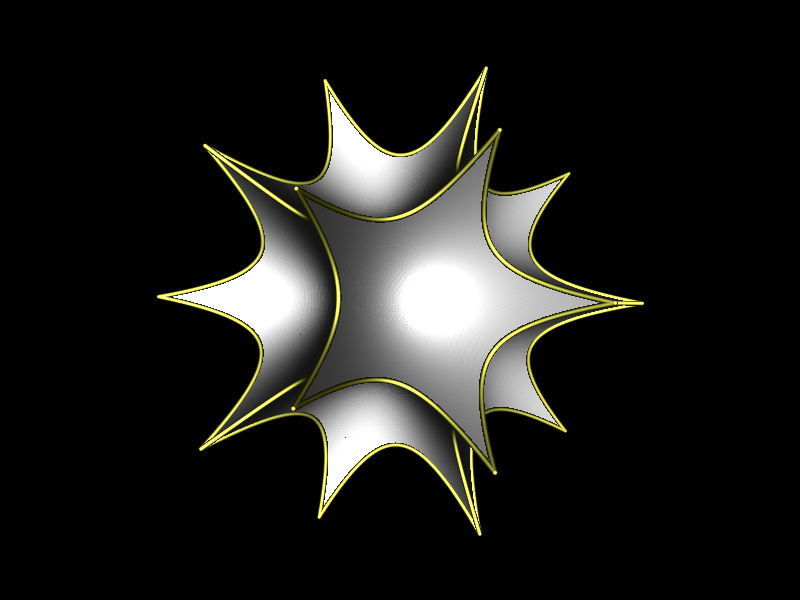

Drawing hyperbolic polyhedra
A. A. Ungar has developed the concept of gyrovector space. His theory provides a (gyro)vector approach to hyperbolic geometry.
Ungar deeply studied three examples of gyrovector spaces; they correspond to three models of hyperbolic geometry: the Beltrami model, the Poincaré ball model, and the hyperboloid model.
In this blog post, I will consider the gyrovector approach to the hyperboloid model. We will see how it makes easy to draw some hyperbolic polyhedra.
Gyrovector space
A point is an element of \(\mathbb{R}^n\). Throughout, \(s\) is a fixed positive number.
Shortly speaking, \(\mathbb{R}^n\) is a gyrovector space when it is equipped with a gyroaddition and a scalar gyromultiplication.
Gyroaddition
In order to define the gyroaddition of two points, we introduce the beta factor of a point \(A\), defined by \[ \beta_A = \dfrac{1}{\sqrt{1 + \dfrac{{\Vert A \Vert}^2}{s^2}}}. \]
The gyroaddition of two points \(A\) and \(B\) is then defined by \[ A \oplus B = \left(1 + \frac{\beta_A}{1+\beta_A}\frac{A\cdot B}{s^2} + \frac{1-\beta_B}{\beta_B} \right) A + B. \] Later, we will resort to the (non-obvious) property \[ (\star)\qquad -A \oplus (A \oplus B) = B. \]
# gyroaddition ####
dotprod <- function(x, y=NULL){
c(crossprod(x, y))
}
betaF <- function(A, s=1) 1/sqrt(1+dotprod(A)/s^2)
gyroadd <- function(A, B, s=1){
betaA <- betaF(A, s); betaB <- betaF(B, s)
(1 + betaA/(1+betaA)*dotprod(A,B)/s^2 + (1-betaB)/betaB) * A + B
}Scalar gyromultiplication
For \(r \in \mathbb{R}\), the scalar gyromultiplication of a point \(A\) by \(r\) is defined by
\[
r \otimes A =
\frac{s}{\Vert A \Vert}
\sinh\left(r \sinh^{-1}\left(\frac{\Vert A \Vert}{s}\right)\right) A.
\]
It is easy to see that \(0 \otimes A = \mathbf{0}\) and \(1 \otimes A = A\).
# scalar gyromultiplication ####
gyroscalar <- function(r, A, s=1){
Anorm <- sqrt(dotprod(A))
s/Anorm * sinh(r*asinh(Anorm/s)) * A
}Gyroline, gyrosegment and gyromidpoint
In order to define a gyroline and the gyrosegment joining two points, we introduce the notation \[ \overset{\oplus\longrightarrow}{AB} = (-A) \oplus B. \]
The gyroline passing through \(A\) and \(B\) is the set of all points having form \[ A \oplus \Bigl(t \otimes \overset{\oplus\longrightarrow}{AB}\Bigr) \] for some \(t \in \mathbb{R}\).
Observe that the point \(A \oplus \Bigl(t \otimes \overset{\oplus\longrightarrow}{AB}\Bigr)\) equals \(A\) when \(t=0\) (easy) and equals \(B\) when \(t=1\) (that stems from property \((\star)\)).
The gyrosegment that joins \(A\) and \(B\) is the set of such points for \(t \in [0,1]\): \[ \left\{ A \oplus \Bigl(t \otimes \overset{\oplus\longrightarrow}{AB}\Bigr) \Bigm| 0 \leq t \leq 1\right\}. \]
The gyromidpoint of \(A\) and \(B\) is the point of the gyrosegment joining \(A\) and \(B\) corresponding to \(t = \frac12\): \[ A \oplus \left(\frac{1}{2} \otimes \overset{\oplus\longrightarrow}{AB}\right). \]
# gyrosegment ####
gyroABt <- function(A, B, t, s=1){
gyroadd(A, gyroscalar(t, gyroadd(-A, B, s), s), s)
}
gyromidpoint <- function(A, B, s=1){
gyroABt(A, B, 0.5, s)
}
gyrosegment <- function(A, B, s=1, n=50){
t(sapply(seq(0, 1, length.out = n), function(t){
gyroABt(A, B, t, s)
}))
}Let’s plot a two-dimensional gyrosegment.
A <- c(1,2); B <- c(1,1)
plot(rbind(A,B), type = "p", pch = 19, xlab = NA, ylab = NA,
xlim = c(0,2), ylim = c(0,2))
s <- 0.2
AB <- gyrosegment(A, B, s)
lines(AB)
text(t(A), expression(italic(A)), pos=1)
text(t(B), expression(italic(B)), pos=3)
# gyromidpoint
points(t(gyromidpoint(A, B, s)), pch = 19, col = "red")
# asymptotes
lines(rbind(c(0,0), gyroABt(A, B, t=-20, s)), lty="dashed")
lines(rbind(c(0,0), gyroABt(A, B, t=20, s)), lty="dashed")
This is a part of a hyperbola whose asymptotes meet at the origin.
Hyperbolic triangle
Thanks to the gyrosegments, we can easily plot the edges of a hyperbolic triangle.
library(rgl)
A <- c(1, 0, 0); B <- c(0, 1, 0); C <- c(0, 0, 1)
s <- 0.3
AB <- gyrosegment(A, B, s)
AC <- gyrosegment(A, C, s)
BC <- gyrosegment(B, C, s)
view3d(30, 30, zoom = 0.75)
lines3d(AB, lwd=3); lines3d(AC, lwd=3); lines3d(BC, lwd=3)
We can draw a prettier picture with the help of the cylinder3d function of rgl:
view3d(30, 30, zoom = 0.75)
# plot vertices
spheres3d(rbind(A,B,C), radius = 0.03, color = "yellow")
# plot edges
shade3d(
cylinder3d(AB, radius = 0.015, sides = 20), color = "yellow")
shade3d(
cylinder3d(AC, radius = 0.015, sides = 20), color = "yellow")
shade3d(
cylinder3d(BC, radius = 0.015, sides = 20), color = "yellow")
Now, how to fill the hyperbolic triangle with a color? We will do so by constructing a triangular mesh of the hyperbolic triangle.
# a subdivision step
gyrosubdiv0 <- function(A1, A2, A3, s=1){
M12 <- gyromidpoint(A1, A2, s)
M13 <- gyromidpoint(A1, A3, s)
M23 <- gyromidpoint(A2, A3, s)
list(
list(A1, M12, M13),
list(A2, M23, M12),
list(A3, M13, M23),
list(M12, M13, M23)
)
}
# iterate the subdivision, and return a "mesh3d" object
gyrosubdiv <- function(A1, A2, A3, s=1, depth=5){
subd <- gyrosubdiv0(A1, A2, A3, s)
for(i in seq_len(depth-1)){
subd <- purrr::flatten(lapply(subd, function(triplet){
gyrosubdiv0(triplet[[1]], triplet[[2]], triplet[[3]], s)
}))
}
vertices <-
do.call(cbind,
lapply(subd, function(triplet) do.call(cbind, triplet)))
indices <- matrix(1:ncol(vertices), nrow = 3)
tmesh3d(
vertices = vertices,
indices = indices,
homogeneous = FALSE
)
}Here is the mesh at the first iteration:
mesh <- gyrosubdiv(A, B, C, s, depth = 1)
view3d(30, 30, zoom = 0.75)
wire3d(mesh, lwd = 3, specular = "black")
At the second iteration:
mesh <- gyrosubdiv(A, B, C, s, depth = 2)
view3d(30, 30, zoom = 0.75)
wire3d(mesh, lwd = 3, specular = "black")
Now let’s plot the shaded triangle:
mesh <- gyrosubdiv(A, B, C, s, depth = 6)
view3d(30, 30, zoom = 0.75)
shade3d(mesh, color = "navy", specular = "cyan")Icosahedron
An icosahedron is made of twenty triangular faces. So we have everything needed to plot an icosahedron.
icosahedron <- icosahedron3d()
vertices <- t(icosahedron$vb[-4,])
edges <- Rvcg::vcgGetEdge(icosahedron)
faces <- t(icosahedron$it)
s <- 0.5
# plot icosahedron ####
view3d(30, 30, zoom = 0.7)
# plot vertices
spheres3d(vertices, radius = 0.05, color = "yellow")
# plot edges
for(i in 1:nrow(edges)){
A <- vertices[edges[i,"vert1"],]
B <- vertices[edges[i,"vert2"],]
AB <- gyrosegment(A, B, s)
shade3d(
cylinder3d(AB, radius = 0.03, sides = 20), color = "yellow")
}
# plot faces
for(i in 1:nrow(faces)){
idx <- faces[i,]
A <- vertices[idx[1],]
B <- vertices[idx[2],]
C <- vertices[idx[3],]
mesh <- gyrosubdiv(A, B, C, s = s, depth = 6)
shade3d(addNormals(mesh), color = "navy")
}
Triangular orthobicopula
To plot the icosahedron, we had at our disposal its vertices, its edges, and its faces, which are triangular.
Now consider the triangular orthobicopula. We only have the coordinates of its vertices, and not all its faces are triangular. So, how to plot it?
Since this is a convex polyhedron, we can use the cxhull package to get its edges and its faces. We use the option triangulate = TRUE to get a triangulation of the faces.
vertices <- rbind(
c(1, -1/sqrt(3), sqrt(8/3)),
c(1, -1/sqrt(3), -sqrt(8/3)),
c(-1, -1/sqrt(3), sqrt(8/3)),
c(-1, -1/sqrt(3), -sqrt(8/3)),
c(0, 2/sqrt(3), sqrt(8/3)),
c(0, 2/sqrt(3), -sqrt(8/3)),
c(1, sqrt(3), 0),
c(1, -sqrt(3), 0),
c(-1, sqrt(3), 0),
c(-1, -sqrt(3), 0),
c(2, 0, 0),
c(-2, 0, 0)
)
# faces
library(cxhull)
hull <- cxhull(vertices, triangulate = TRUE)
faces <- t(sapply(hull$facets, `[[`, "vertices"))
# edges
hull <- cxhull(vertices, triangulate = FALSE)
edges <- hull$edgesAnd now we can proceed as before:
s <- 0.5
view3d(30, 30, zoom = 0.7)
# plot vertices
spheres3d(vertices, radius = 0.05, color = "yellow")
# plot edges
for(i in 1:nrow(edges)){
A <- vertices[edges[i,1],]
B <- vertices[edges[i,2],]
AB <- gyrosegment(A, B, s)
shade3d(
cylinder3d(AB, radius = 0.03, sides = 20), color = "yellow")
}
# plot faces
for(i in 1:nrow(faces)){
idx <- faces[i,]
A <- vertices[idx[1],]
B <- vertices[idx[2],]
C <- vertices[idx[3],]
mesh <- gyrosubdiv(A, B, C, s = s, depth = 6)
shade3d(addNormals(mesh), color = "navy")
}
Asymptote hyperbolic dodecahedron
Below is an Asymptote code which draws a hyperbolic dodecahedron. The gyromidpoint is calculated differently, in a way that does not resort to the scalar gyromultiplication.
settings.render = 4;
settings.outformat = "pdf";
// modules -----------------------------------------------------------
import three;
import tube;
// scene -------------------------------------------------------------
size(10cm);
currentprojection = orthographic(20, 10, -2);
viewportmargin = (10,10);
currentlight = (1000,500,100);
// gyromidpoint ------------------------------------------------------
real gamma(triple M, real s){
return 1 / sqrt(1 - dot(M,M)/s/s);
}
real beta(triple M, real s){
return 1 / sqrt(1 + dot(M,M)/s/s);
}
triple phiEU(triple M, real s){
return gamma(M,s)*M;
}
triple phiUE(triple M, real s){
return beta(M,s)*M;
}
triple gyromidpointE(triple A, triple B, real s){
real gammaA = gamma(A,s);
real gammaB = gamma(B,s);
return (gammaA*A + gammaB*B)/(gammaA + gammaB);
}
triple gyromidpointU(triple A, triple B, real s){
return phiEU(gyromidpointE(phiUE(A,s), phiUE(B,s), s), s);
}
// mesh maker --------------------------------------------------------
triple[][] subdiv0(triple[] triangle, real s){
triple m01 = gyromidpointU(triangle[0], triangle[1], s);
triple m02 = gyromidpointU(triangle[0], triangle[2], s);
triple m12 = gyromidpointU(triangle[1], triangle[2], s);
return new triple[][] {
{triangle[0], m01, m02},
{triangle[1], m12, m01},
{triangle[2], m02, m12},
{m01, m12, m02}
};
}
triple[][] subdiv(int n, triple[] triangle, real s){
if(n==1){
return subdiv0(triangle, s);
}
triple[][] triangles = subdiv(n-1, triangle, s);
triple[][] out = new triple[0][3];
for(int i=0; i<4^(n-1); ++i){
triple[] trgl = triangles[i];
out.append(subdiv0(trgl, s));
}
return out;
}
struct Mesh {
triple[] vertices;
int[][] indices;
}
Mesh htriangle(int n, triple[] triangle, real s){
triple[][] triangles = subdiv(n, triangle, s);
triple[] vertices;
int[][] indices;
int faceIndex = 0;
for(int i=0; i<triangles.length; ++i){
var triangle = triangles[i];
vertices.push(triangle[0]);
vertices.push(triangle[1]);
vertices.push(triangle[2]);
int[] x = {faceIndex, faceIndex+1, faceIndex+2};
indices.push(x);
faceIndex += 3;
}
Mesh out;
out.vertices = vertices;
out.indices = indices;
return out;
}
// gyrosegment -------------------------------------------------------
triple gyroadd(triple A, triple B, real s){
real betaA = beta(A,s);
real betaB = beta(B,s);
return A + B + (betaA/(1+betaA)*dot(A,B)/s/s + (1-betaB)/betaB)*A;
}
triple gyroscalar(real r, triple X, real s){
real Xnorm = length(X);
return s*sinh(r*asinh(Xnorm/s)) * X/Xnorm;
}
triple gyroABt(triple A, triple B, real t, real s){
return gyroadd(A, gyroscalar(t, gyroadd(-A, B, s=s), s=s), s=s);
}
path3 gyrosegment(triple A, triple B, real s, int n){
path3 out;
for(int i = 0; i <= n; ++i){
out = out -- gyroABt(A, B, i/n, s);
}
return out;
}
// dodecahedron vertices ---------------------------------------------
real phi = (1 + sqrt(5)) / 2;
real a = 1 / sqrt(3);
real b = a / phi;
real c = a * phi;
triple[] vertices =
{(a, a, a),
(a, a, -a),
(a, -a, a),
(-a, -a, a),
(-a, a, -a),
(-a, a, a),
(0, b, -c),
(0, -b, -c),
(0, -b, c),
(c, 0, -b),
(-c, 0, -b),
(-c, 0, b),
(b, c, 0),
(b, -c, 0),
(-b, -c, 0),
(-b, c, 0),
(0, b, c),
(a, -a, -a),
(c, 0, b),
(-a, -a, -a)};
// dodecahedron faces ------------------------------------------------
int[][] faces =
{
{13, 2, 3},
{3, 14, 13},
{3, 2, 8},
{17, 1, 9},
{6, 1, 17},
{17, 7, 6},
{6, 7, 19},
{19, 4, 6},
{10, 4, 19},
{13, 14, 19},
{19, 17, 13},
{7, 17, 19},
{15, 1, 6},
{12, 1, 15},
{6, 4, 15},
{15, 0, 12},
{15, 16, 0},
{5, 16, 15},
{18, 1, 12},
{12, 0, 18},
{9, 1, 18},
{0, 16, 18},
{8, 2, 18},
{18, 16, 8},
{18, 2, 13},
{18, 17, 9},
{13, 17, 18},
{8, 16, 11},
{11, 16, 5},
{11, 3, 8},
{14, 3, 11},
{11, 19, 14},
{10, 19, 11},
{11, 4, 10},
{5, 15, 11},
{11, 15, 4}
};
// dodecahedron edges ------------------------------------------------
int[][] edges =
{
{13, 2},
{3, 14},
{14, 13},
{3, 8},
{2, 8},
{17, 9},
{1, 9},
{6, 1},
{17, 7},
{7, 6},
{7, 19},
{4, 6},
{10, 4},
{10, 19},
{14, 19},
{17, 13},
{12, 1},
{12, 15},
{4, 15},
{0, 12},
{16, 0},
{5, 16},
{5, 15},
{0, 18},
{9, 18},
{2, 18},
{16, 8},
{11, 5},
{11, 3},
{10, 11}
};
// plot --------------------------------------------------------------
real s = 0.3;
for(int i=0; i<faces.length; ++i){
int[] idx = faces[i];
triple[] triangle = {vertices[idx[0]],vertices[idx[1]],vertices[idx[2]]};
Mesh mesh = htriangle(6, triangle, s);
draw(mesh.vertices, mesh.indices, m=rgb("000080ff"));
}
for(int i=0; i<edges.length; ++i){
triple A = vertices[edges[i][0]];
triple B = vertices[edges[i][1]];
path3 AB = gyrosegment(A, B, s, 50);
draw(tube(AB, scale(0.02)*unitcircle), yellow);
}
for(int i=0; i<vertices.length; ++i){
draw(shift(vertices[i])*scale3(0.03)*unitsphere, yellow);
}
three.js hyperbolic dodecahedron
Here is a hyperbolic dodecahedron plotted with three.js:
POV-Ray hyperbolic dodecahedron
And here is a hyperbolic dodecahedron plotted with POV-Ray:
// hyperbolic dodecahedron //
#version 3.7;
global_settings { assumed_gamma 1 }
#include "colors.inc"
#include "textures.inc"
// Camera and light source -----------------------------------------------------
camera {
location <0,0,-4>
look_at 0
angle 45
}
light_source { <0, 0, -1000> White }
// gyrostuff -------------------------------------------------------------------
#macro dotprod(A,B)
(A.x*B.x + A.y*B.y + A.z*B.z)
#end
#macro beta(A,s)
(1 / sqrt(1 + dotprod(A,A)/s/s))
#end
#macro gyroadd(A,B,s)
#local betaA = beta(A,s);
#local betaB = beta(B,s);
(1 + betaA/(1+betaA)*dotprod(A,B)/s/s + (1-betaB)/betaB) * A + B
#end
#macro gyroscalar(r,A,s)
#local Anorm = dotprod(A,A);
s/Anorm * sinh(r*asinh(Anorm/s)) * A
#end
#macro gyroABr(A,B,s,r)
gyroadd(A, gyroscalar(r, gyroadd(-A, B, s), s), s)
#end
#macro gyromidpoint(A,B,s)
gyroABr(A,B,s,0.5)
#end
#macro gyrosegment(A,B,s,n)
#local out = array[n+1];
#for(i, 0, n)
#local out[i] = gyroABr(A,B,s,i/n);
#end
out
#end
// subdivision step ------------------------------------------------------------
#macro subdiv0(A,B,C,s)
#local mAB = gyromidpoint(A,B,s);
#local mAC = gyromidpoint(A,C,s);
#local mBC = gyromidpoint(B,C,s);
#local trgl1 = array[3] {A, mAB, mAC};
#local trgl2 = array[3] {B, mAB, mBC};
#local trgl3 = array[3] {C, mBC, mAC};
#local trgl4 = array[3] {mAB, mAC, mBC};
array[4] {trgl1, trgl2, trgl3, trgl4}
#end
// iterated subdivision --------------------------------------------------------
#macro subdiv(A,B,C,s,depth)
#if(depth=1)
#local out = subdiv0(A,B,C,s);
#else
#local triangles = subdiv(A,B,C,s,depth-1);
#local out = array[pow(4,depth)];
#for(i,0,pow(4,depth-1)-1)
#local trgl = triangles[i];
#local trgls = subdiv0(trgl[0], trgl[1], trgl[2], s);
#local out[4*i] = trgls[0];
#local out[4*i+1] = trgls[1];
#local out[4*i+2] = trgls[2];
#local out[4*i+3] = trgls[3];
#end
#end
out
#end
// dodecahedron ----------------------------------------------------------------
#declare phi = (1+sqrt(5))/2;
#declare a = 1/sqrt(3);
#declare b = a/phi;
#declare c = a*phi;
#declare vs = array[20]
{ <a, a, a>,
<a, a, -a>,
<a, -a, a>,
<-a, -a, a>,
<-a, a, -a>,
<-a, a, a>,
<0, b, -c>,
<0, -b, -c>,
<0, -b, c>,
<c, 0, -b>,
<-c, 0, -b>,
<-c, 0, b>,
<b, c, 0>,
<b, -c, 0>,
<-b, -c, 0>,
<-b, c, 0>,
<0, b, c>,
<a, -a, -a>,
<c, 0, b>,
<-a, -a, -a> };
#declare faces = array[36][3]
{
{13, 2, 3},
{3, 14, 13},
{3, 2, 8},
{17, 1, 9},
{6, 1, 17},
{17, 7, 6},
{6, 7, 19},
{19, 4, 6},
{10, 4, 19},
{13, 14, 19},
{19, 17, 13},
{7, 17, 19},
{15, 1, 6},
{12, 1, 15},
{6, 4, 15},
{15, 0, 12},
{15, 16, 0},
{5, 16, 15},
{18, 1, 12},
{12, 0, 18},
{9, 1, 18},
{0, 16, 18},
{8, 2, 18},
{18, 16, 8},
{18, 2, 13},
{18, 17, 9},
{13, 17, 18},
{8, 16, 11},
{11, 16, 5},
{11, 3, 8},
{14, 3, 11},
{11, 19, 14},
{10, 19, 11},
{11, 4, 10},
{5, 15, 11},
{11, 15, 4}
};
#declare edges = array[30][2]
{
{13, 2},
{3, 14},
{14, 13},
{3, 8},
{2, 8},
{17, 9},
{1, 9},
{6, 1},
{17, 7},
{7, 6},
{7, 19},
{4, 6},
{10, 4},
{10, 19},
{14, 19},
{17, 13},
{12, 1},
{12, 15},
{4, 15},
{0, 12},
{16, 0},
{5, 16},
{5, 15},
{0, 18},
{9, 18},
{2, 18},
{16, 8},
{11, 5},
{11, 3},
{10, 11}
};
#declare s = 0.3;
#declare depth = 6;
#declare htriangles = array[dimension_size(faces,1)];
#for(i, 0, dimension_size(faces,1)-1)
#declare htriangles[i] =
subdiv(vs[faces[i][0]],vs[faces[i][1]],vs[faces[i][2]], s, depth);
#end
#declare segments = array[dimension_size(edges,1)];
#for(i, 0, dimension_size(edges,1)-1)
#declare segments[i] =
gyrosegment(vs[edges[i][0]],vs[edges[i][1]],s,100);
#end
object{
union{
mesh{
#for(j, 0, dimension_size(faces,1)-1)
#local htriangle = htriangles[j];
#for(i, 0, dimension_size(htriangle,1)-1)
triangle {
htriangle[i][0], htriangle[i][1], htriangle[i][2]
}
#end
#end
texture {
Chrome_Metal
finish {
ambient 0.01
diffuse 2
reflection 0
brilliance 8
specular 0.8
roughness 0.1
}
}
}
#for(j, 0, dimension_size(edges,1)-1)
#local segment = segments[j];
sphere_sweep{
linear_spline 101
#for(k,0,100)
segment[k] 0.01
#end
texture{
Gold_Metal
finish {
ambient 0.01
diffuse 2
reflection 0
brilliance 8
specular 0.8
roughness 0.1
}
}
}
#end
}
rotate <0,-20,0>
rotate <-60,0,0>
}
Update 2019-04-09
I’ve realized that the addNormals function of the rgl package is not appropriate when there are duplicated vertices in the mesh (it adds different normals to the duplicated vertices). And there are (a lot of) duplicated vertices in the mesh created by the gyrosubdiv function.
To remove the duplicated vertices, one can use the vcgClean function of the Rvcg package (which also adds the normals). Observe the difference:
idx <- faces[1,]
A <- vertices[idx[1],]
B <- vertices[idx[2],]
C <- vertices[idx[3],]
mesh <- gyrosubdiv(A, B, C, s = s, depth = 4)
view3d(30, 30, zoom = 0.9)
shade3d(mesh, color = "navy")mesh <- Rvcg::vcgClean(mesh, sel = c(0,7), silent = TRUE)
view3d(30, 30, zoom = 0.9)
shade3d(mesh, color = "navy")So a better gyrosubdiv function is:
gyrosubdiv <- function(A1, A2, A3, s=1, depth=5){
subd <- gyrosubdiv0(A1, A2, A3, s)
for(i in seq_len(depth-1)){
subd <- purrr::flatten(lapply(subd, function(triplet){
gyrosubdiv0(triplet[[1]], triplet[[2]], triplet[[3]], s)
}))
}
vertices <-
do.call(cbind,
lapply(subd, function(triplet) do.call(cbind, triplet)))
indices <- matrix(1:ncol(vertices), nrow = 3)
mesh <- tmesh3d(
vertices = vertices,
indices = indices,
homogeneous = FALSE
)
Rvcg::vcgClean(mesh, sel = c(0,7), silent = TRUE)
}Reference
- A. A. Ungar. Analytic Hyperbolic Geometry: Mathematical Foundations And Applications. World Scientific Pub Co Inc, 2005.